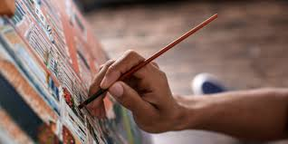
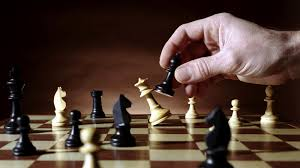

Actividades Deportivas
Fútbol
El fútbol es el deporte más popular del mundo. Se juega entre dos equipos que intentan marcar goles pateando un balón hacia la portería contraria. Favorece el trabajo en equipo, la coordinación y la resistencia.

Baloncesto
El baloncesto es un deporte dinámico que se juega entre dos equipos de cinco jugadores. El objetivo es encestar el balón en la canasta del rival, combinando velocidad, fuerza y estrategia.

Actividades Culturales
Pintura
La pintura es una disciplina artística que permite expresar emociones e ideas a través del color y la forma. Existen distintas técnicas como el óleo, la acuarela y el acrílico.
Ajedrez
El ajedrez es un juego de estrategia y concentración que enfrenta a dos jugadores. Cada uno busca dar jaque mate al rey del oponente utilizando táctica y planificación.
